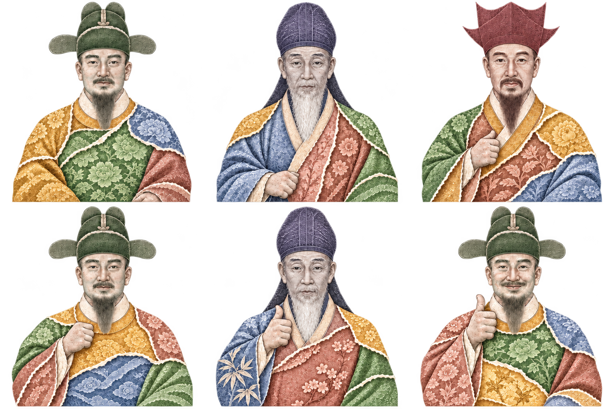

네 가지 원화 색을 입은 콜라주.
승인된 비율과 종이 모션을 유지한 6개 연속 동작.
세종대왕·퇴계 이황·율곡 이이의 정면 얼굴.
천원 청색 · 오천원 적갈색 · 만원 녹색 · 오만원 황색.
준비0.00초
비율 기준과 동작 비교

배경은 실제 만원 지폐 스캔을 사용합니다. 인물은 지폐 자료를 참고해 새로 제작한 콜라주 그래픽이며, 세종대왕 기준의 몸과 팔 동작을 유지합니다. 옷 조각을 천원·오천원·만원·오만원의 색으로 조합했고 종이 넘김 속도와 동작 유지 시간은 이전과 같습니다.